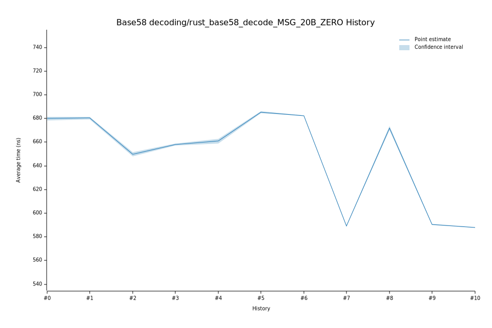

# 42023-02-09T13:25:27Z
|
Lower Bound |
Estimate |
Upper Bound |
| Value: |
659.04ns |
660.92ns |
662.94ns |
| Change in Value: |
+0.7483% |
+1.0510% |
+1.3449% |
No change in performance detected.
# 32023-02-08T19:33:23Z
|
Lower Bound |
Estimate |
Upper Bound |
| Value: |
657.17ns |
658.02ns |
658.92ns |
| Change in Value: |
+0.9639% |
+1.2790% |
+1.5978% |
No change in performance detected.
# 22022-12-05T09:20:49Z
|
Lower Bound |
Estimate |
Upper Bound |
| Value: |
648.00ns |
649.74ns |
651.55ns |
| Change in Value: |
-4.7641% |
-4.4382% |
-4.0789% |
No change in performance detected.
# 12022-11-14T12:36:32Z
|
Lower Bound |
Estimate |
Upper Bound |
| Value: |
679.42ns |
680.46ns |
681.45ns |
| Change in Value: |
-0.3242% |
+0.0188% |
+0.3440% |
Change within noise threshold.
# 02022-11-04T14:12:39Z
|
Lower Bound |
Estimate |
Upper Bound |
| Value: |
678.22ns |
679.89ns |
681.51ns |